地政学
サンタフェはニューメキシコ州都で、ロッキー山脈南端とリオグランデ流域を結ぶ高地にあります。プエブロ諸共同体、ヒスパニックの土地記憶、連邦政府、州政治、観光経済が交差し、米南西部の歴史的境界を映します。
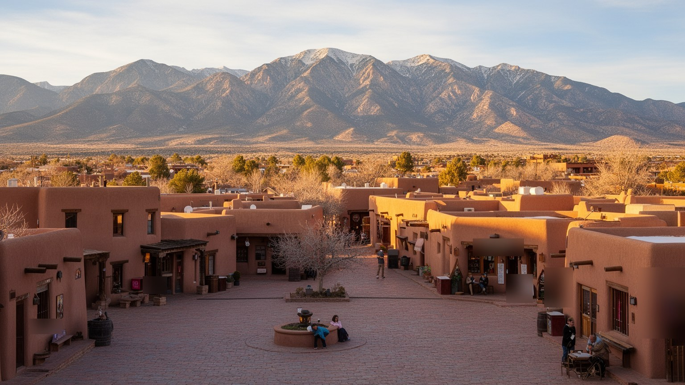
🇺🇸 アメリカ合衆国 / 北米 / World City Atlas
サンタフェは、プエブロの土地、スペイン植民地の広場、州都政治、アドビ建築、芸術市場、乾燥高地の水、観光と住宅格差が近い距離で重なるニューメキシコの首都です。
都市の骨格
サンタフェは小さな州都ですが、北米先住民の交易圏、スペイン帝国、メキシコ領、アメリカ西部拡張、現代の芸術観光が同じプラザと山麓に折り重なっています。
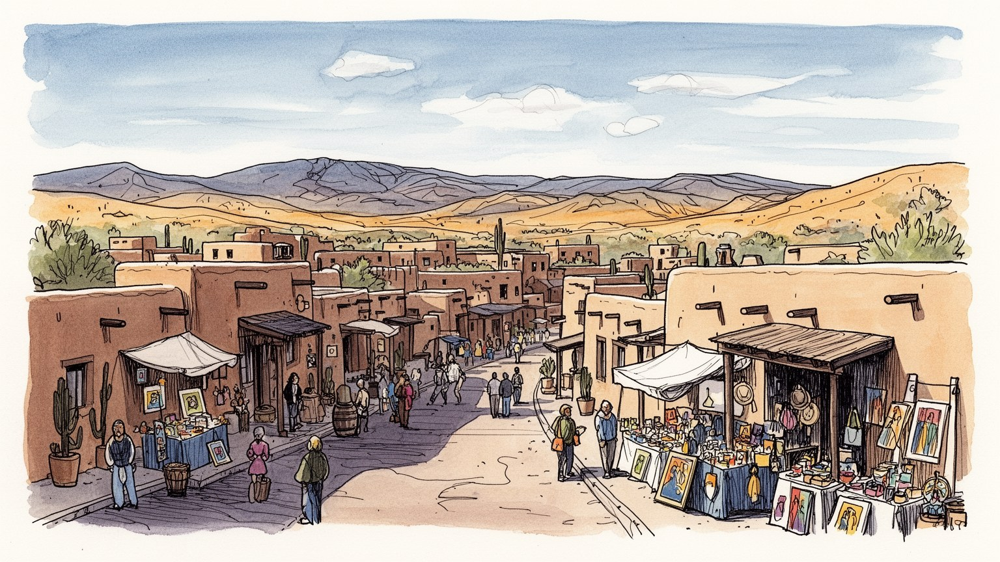
サンタフェはニューメキシコ州都で、ロッキー山脈南端とリオグランデ流域を結ぶ高地にあります。プエブロ諸共同体、ヒスパニックの土地記憶、連邦政府、州政治、観光経済が交差し、米南西部の歴史的境界を映します。
雇用は州政府、郡行政、医療、教育、観光、芸術市場、建設、不動産に支えられます。ギャラリーやホテルの表側には、清掃、調理、接客、警備、修復、道路維持の仕事があります。高い住宅費は働く人の通勤圏を広げます。
カトリック教会、プエブロの儀礼、ヒスパニックの祭り、ネイティブ作家の市場、現代美術、スペイン植民地風の建築規制が街の表情を作ります。信仰と芸術は観光商品である前に、土地と家族の記憶を守る言語でもあります。
旅行者はプラザ、美術館、教会、山道、料理を楽しみますが、住民には水不足、家賃、季節雇用、車依存、老朽住宅、山火事の煙が現実です。観光の成功は、地域で働く人と先住民文化への敬意を守れるかで決まります。
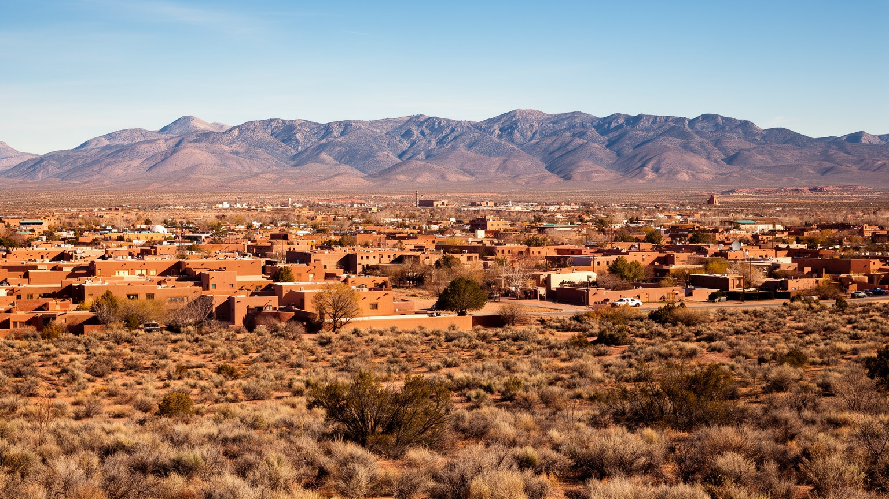
サンタフェを読む入口は、高地の乾燥と山麓の位置です。市街地はサングレ・デ・クリスト山脈の西麓にあり、標高は高く、空気は乾き、昼夜の気温差が大きくなります。リオグランデの広い流域に属しながら、街そのものは細いサンタフェ川とアロヨに依存し、水は常に限られた資源です。山は美しい背景であると同時に、雪解け、山火事、煙、ハイキング、スキー、住宅開発、聖地の記憶を運びます。古いプラザから郊外へ出ると、アドビ風の低い建物、乾いた灌木、車道、ギャラリー、住宅地が続き、徒歩の歴史地区と自動車依存の生活圏が切り替わります。乾燥高地の都市では、日陰、断熱、舗装、井戸、貯水、植栽、屋根の形まで生活技術になります。サンタフェの小ささは、自然に近いという意味だけではありません。水と土地が限られるからこそ、どこに住宅を建て、誰が中心部に住めるかが政治問題になります。観光客が見る青い空と土色の壁の背後には、流域の容量と気候変動の不安があります。さらに標高の高さは、身体感覚にも都市の性格にも影響します。短い坂、強い紫外線、冬の凍結、夏の夕立は、歩き方や建物の使い方を変えます。乾いた土地では、庭の緑も豊かさの象徴であると同時に、水を誰が使えるのかを示す社会的なサインになります。地形は景観である前に、生活の限界線なのです。
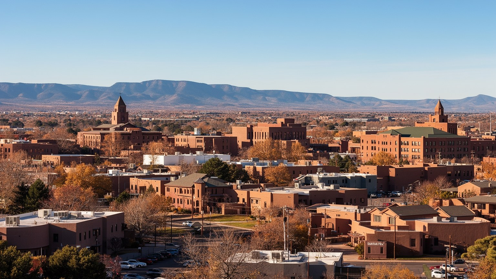
サンタフェの中心には、スペイン植民地都市の形式を受け継ぐプラザがあります。周囲には旧総督邸、教会、商店、博物館、行政機関が集まり、広場は観光の待ち合わせ場所であると同時に、領有、統治、交易、祝祭、抗議の記憶を抱えています。ニューメキシコ州議会や州政府の仕事は、巨大な大都市の官庁街とは違い、小さな市街地の中で地域政治と近い距離にあります。先住民の主権、土地と水の権利、国境政策、エネルギー、教育、医療、貧困、観光収入の分配は、州都で議論される現実的な問題です。広場の周辺では、観光客が土産を買い、住民が行政手続きへ向かい、ネイティブ作家が作品を売り、歴史解説が行われます。この重なりは、政治が抽象的な制度ではなく、石畳、日陰、露店、警備、祝祭として街に現れることを示します。サンタフェの州都性は人口規模よりも、異なる歴史的権利を調停する場所である点にあります。プラザを歩くことは、米南西部の統治の層を歩くことです。州都の小ささは、権力を身近に見せる一方、地域の声がどこまで制度に届くかを厳しく問います。議会の季節には宿泊、飲食、ロビー活動、抗議、報道が中心部へ集まり、普段の観光都市とは違う緊張が生まれます。広場は記念写真の背景である前に、誰がこの土地を代表するのかをめぐる舞台です。公共空間の使い方にも政治が表れます。
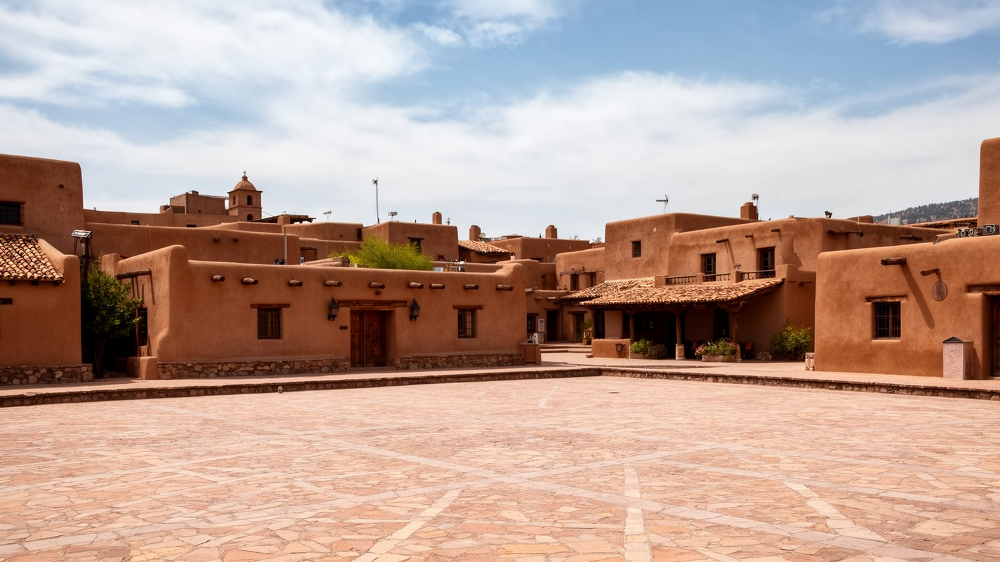
サンタフェの印象を決めるのは、アドビ風の壁、丸みを帯びた角、木の梁、低い屋根、土色の街並みです。これは自然発生的な古さだけではなく、二十世紀以降の都市政策、観光、文化的自己演出によって強く整えられてきました。プエブロ・リバイバルやテリトリアル様式は、地域の気候や素材に根ざす面を持ちながら、同時に「サンタフェらしさ」を商品化する装置にもなります。建築規制は景観の統一を守り、歴史地区の価値を高めますが、過去の複雑さを柔らかな土色のイメージに収めてしまう危険もあります。実際の都市には、駐車場、集合住宅、学校、病院、郊外の道路、低所得者住宅、建設現場があり、すべてが絵葉書のように整っているわけではありません。アドビの景観を読むには、壁の美しさだけでなく、誰が修理費を払い、どの建物が保存され、どの住民が家賃上昇で外へ押し出されるのかを見る必要があります。土色の街並みは文化の誇りであると同時に、不動産価値と観光経済を動かす力です。景観の統一が生活の多様さを隠さないかが問われます。また、アドビ風の外観は本物の土壁とは限らず、現代の建材の表面に地域らしさをまとわせる場合もあります。そうした模倣を単純に否定するのではなく、気候への適応、職人技、規制、商業イメージがどのように混ざるかを見ることが大切です。建築は、街が自分をどう見せたいかを語る言語です。
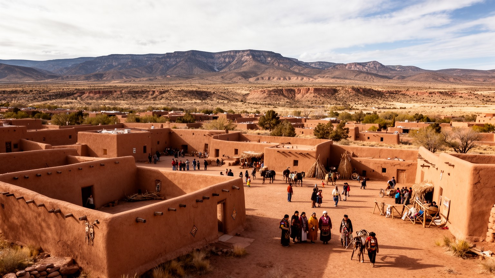
サンタフェはプエブロ世界の外側に作られた都市ではありません。周辺にはテスケ、ナンベ、ポホアケ、サンイルデフォンソ、サントドミンゴなど多くのプエブロ共同体があり、交易、儀礼、工芸、土地、水、教育、観光の関係が続いています。スペイン植民地化、プエブロ反乱、メキシコ領、アメリカ領への移行は、先住民の土地と主権をめぐる長い対立と交渉の歴史でもあります。観光客はプエブロ陶器や銀細工、市場の作品を見ますが、それらは単なる民芸ではなく、家族、言語、聖地、季節の儀礼、政治的権利に結びついた表現です。写真撮影や訪問が制限される場所があるのは、文化が公共の消費物ではないからです。サンタフェの文化都市イメージは、先住民作家と共同体の知識に大きく依存しています。そのため、作品を買うこと、祭りを訪ねること、地名を語ることには敬意と理解が必要です。プエブロとの関係を見ずにサンタフェを語ると、街の美しさを支える土地の記憶が抜け落ちます。都市は周辺共同体の歴史と現在に責任を持っています。さらに、教育、医療、雇用、住宅、言語継承の課題は、都市とプエブロを日常的に結びます。若い作家が市場で売る作品、家族が通う学校、道路を使う通勤、聖地を守る運動は、文化と生活が切り離せないことを示します。敬意は儀礼の場だけでなく、政策や商取引の中にも必要です。
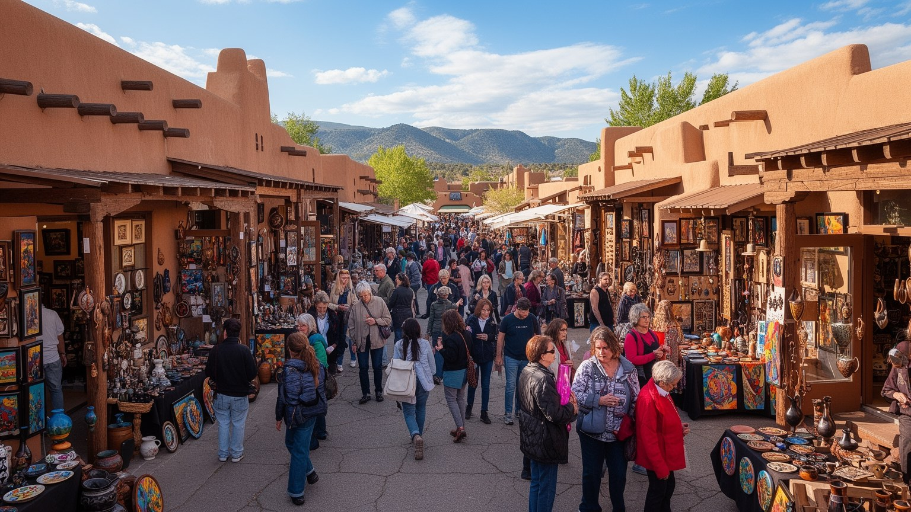
サンタフェはアメリカ有数の芸術市場を持つ小都市です。ギャラリー、博物館、インディアンマーケット、スペイン植民地美術市場、国際民芸市場、現代美術施設が集まり、絵画、陶器、織物、銀細工、写真、実験的な展示が観光と収集の流れを作ります。芸術は街の名声を高め、作家、キュレーター、販売員、額装、輸送、ホテル、飲食に仕事を生みます。一方で、市場が大きいほど、作品の真正性、価格設定、文化の所有、作家への還元、外部資本の影響が問題になります。先住民やヒスパニックの表現が高く評価されることは重要ですが、それが観光客の期待に合わせた記号だけへ縮むと、作家の複雑な現在が見えにくくなります。ギャラリー街の華やかさの背後には、作品を作る時間、材料費、家賃、展示手数料、季節イベントの不安定さがあります。サンタフェの芸術を読むには、美しい作品を眺めるだけでなく、誰が語り、誰が売り、誰が利益を得て、誰の文化が消費されるのかを見る必要があります。芸術市場は都市の経済であり、記憶をめぐる政治でもあります。市場の開催時には、中心部のホテル価格、道路の混雑、臨時雇用、作品搬入、警備、通訳が一気に動きます。作品の価格は名声だけでなく、買い手との距離、作家の世代、共同体の期待にも左右されます。芸術都市の厚みは、展示室の中だけでなく、制作を続ける生活条件に表れます。
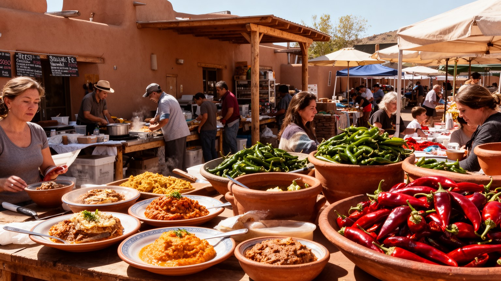
サンタフェの食文化は、赤と緑のチリ、コーン、豆、トルティーヤ、ポソレ、エンチラーダ、ビスコチート、地元の市場によって記憶されます。ニューメキシコ料理はメキシコ料理やテックスメックスと一括りにできず、プエブロ、ヒスパニック、メキシコ、アメリカの歴史が高地の材料と混ざった食の体系です。レストランは観光客に地域らしさを提供しますが、家庭料理、教会行事、祝祭、農家市場、季節のチリの収穫が食の基盤を作ります。サン・ミゲル礼拝堂、聖フランシス大聖堂、フィエスタ、ファロリートの光、墓地や家族の祈りは、カトリックと地域の習慣が都市の時間を刻むことを示します。同時に、プエブロの儀礼は外部に開かれない部分も多く、観光の好奇心とは距離を保つ必要があります。食と儀礼を読むことは、味や祭りを楽しむだけでなく、家族、教会、共同体、土地、水、作物がどのようにつながるかを見ることです。チリの香りや夜の灯りは、サンタフェを柔らかく見せますが、その背後には労働、信仰、移民、記憶の層があります。食卓は歴史を日常に戻す場所です。食堂の厨房、農家市場の朝、祝祭前の買い物、教会の集まりには、観光ガイドに出にくい地域の関係が残ります。辛さや香りは名物である前に、家族ごとの好み、収穫年、手間、移住の経験を伝えます。料理を読むことは、土地の乾きと人の移動を読むことでもあります。
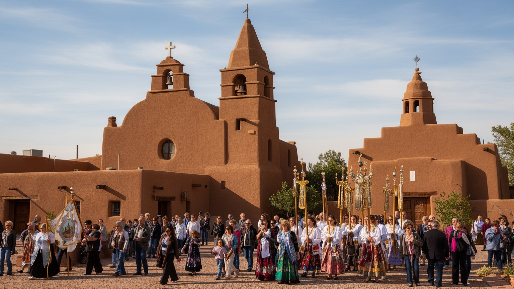
サンタフェ観光は、プラザ、旧総督邸、聖フランシス大聖堂、ロレット礼拝堂、キャニオンロード、美術館、マーケット、周辺の山道を組み合わせて成り立ちます。歴史地区は歩きやすく、建物の高さが抑えられ、土色の景観が連続するため、訪問者は短い滞在でも強い場所性を感じます。観光は宿泊、飲食、ガイド、ギャラリー、交通、清掃、イベント設営に雇用を生み、州都の経済を支えます。しかし人気は、中心部の家賃上昇、短期滞在住宅、駐車場不足、季節労働、文化の単純化も招きます。歴史が売り物になるほど、どの歴史を語り、どの痛みを省略し、誰を観光の背景にするのかが問われます。サンタフェの遺産はスペイン植民地だけでなく、先住民の土地、メキシコ領の記憶、アメリカ併合、鉄道と観光産業の形成まで含みます。観光を読むには、名所の数ではなく、訪問者の楽しみと住民の生活、文化の尊重が両立しているかを見る必要があります。小都市の魅力は、働く人が街の中心に残れる時に深くなります。遺産は消費する景色ではなく、共有の責任です。混雑する季節には、静かな路地や教会、近隣の駐車場まで観光の影響が及びます。歴史地区の案内板や博物館展示が、植民地化や先住民の抵抗をどの程度語るかも重要です。美しい街並みを楽しむほど、その美しさを支える労働と省略された歴史に目を向ける必要があります。
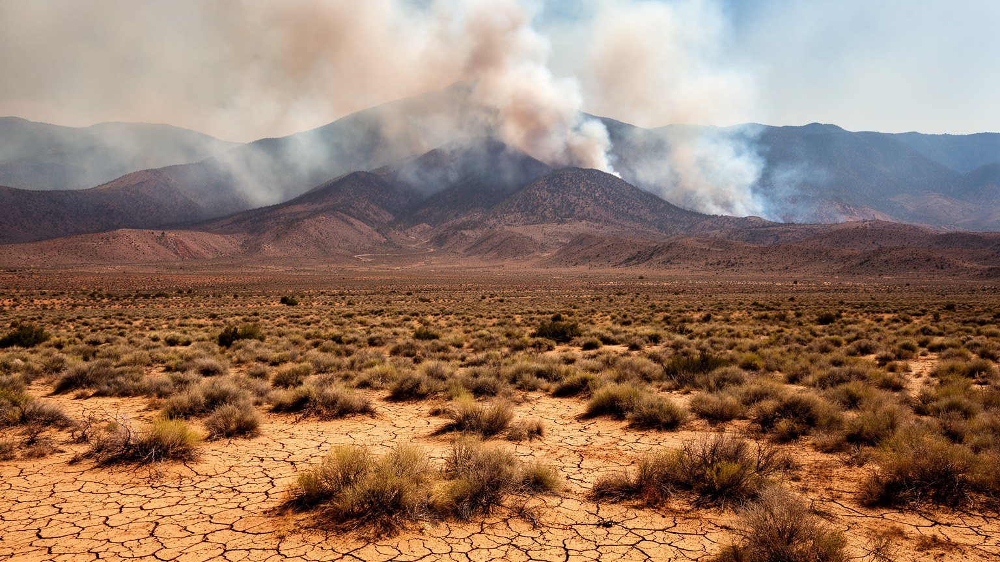
サンタフェの未来を左右するのは水です。乾燥した高地では、降水量、雪解け、地下水、貯水、節水、植栽、開発許可が都市の成長を制限します。リオグランデ流域全体が気候変動と人口増加の圧力を受け、山の積雪が少ない年や長い干ばつは、農業、住宅、観光、景観に影響します。山火事と煙も大きなリスクです。周辺の森林が乾き、火災が起きると、住民の健康、道路、観光シーズン、保険、避難計画が揺らぎます。アドビ風の建築や乾いた庭は地域らしさを作りますが、断熱、冷房、日陰、公共施設の涼しさ、低所得世帯の光熱費も気候適応の課題です。水を多く使う芝生、ホテル、別荘、郊外住宅が増えるほど、誰が節水の負担を引き受けるのかが問題になります。サンタフェを持続可能な都市として見るには、観光のイメージではなく、流域の容量、先住民の水権、農村との関係、貧しい世帯の負担を同時に読む必要があります。水不足は自然条件であるだけでなく、土地利用と格差の問題です。乾いた美しさは、節制と政治の上に成り立っています。気候リスクは災害の日だけでなく、保険料、建築費、庭の手入れ、屋外労働、観光予約の変動として日常に入り込みます。煙の多い夏や水制限の年には、豊かな景観を売る都市像そのものが揺らぎます。備えは環境政策であると同時に、住宅政策と労働政策でもあります。
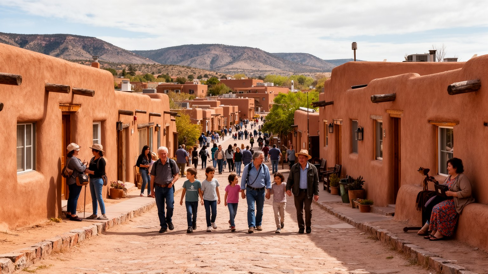
サンタフェは小さく美しい都市である一方、住宅費の高さが深刻な課題です。中心部の歴史地区や眺めの良い住宅は高く、別荘、退職者、観光、短期賃貸、不動産投資が価格を押し上げます。ホテル、レストラン、清掃、介護、学校、行政、建設で働く人が、市内に住みにくくなり、周辺町村から車で通勤する構造が強まります。これにより、交通費、時間、保育、医療、災害時の移動が生活の負担になります。ヒスパニックや先住民の家族が長く住んできた地域でも、地価上昇と相続、修理費、税負担が住み続ける力を弱めることがあります。高齢者にとっては、住宅の維持、暖房、医療へのアクセス、孤立も問題です。都市の魅力を守る政策が、結果として低所得の住民や若い世帯を外へ押し出すなら、文化の担い手も失われます。サンタフェの住宅問題は、大都市だけの課題ではなく、観光地化した小都市が抱える典型的な矛盾です。誰が中心に住み、誰がサービスを支え、誰が街の記憶を継ぐのかを問わなければ、景観は残っても生活の厚みは薄くなります。住まいは都市文化の基盤です。公共交通が限られる地域では、車を持てるかどうかも機会を分けます。若い作家、教員、医療従事者、飲食店員が遠くへ押し出されれば、街は文化都市を名乗りながら日常の担い手を失います。手ごろな住宅を中心部近くに確保できるかが、サンタフェの次の公平性を決めます。
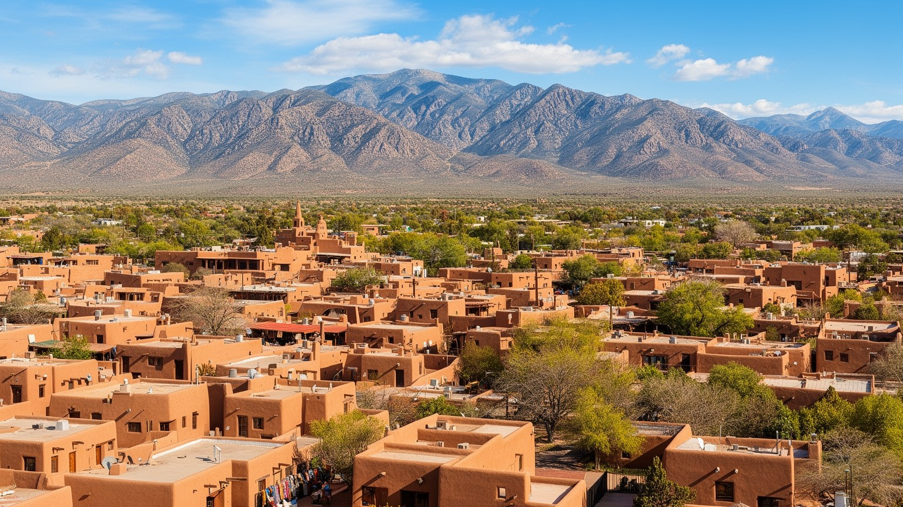
サンタフェは、人口規模だけで測ると小さな都市です。しかしその小ささの中に、プエブロの土地、スペイン植民地、メキシコ領、アメリカの西部拡張、州都政治、芸術市場、観光、乾燥高地の気候が凝縮されています。プラザを歩けば、旧総督邸、教会、ギャラリー、土産物店、露店、行政機関が近くにあり、都市の歴史が一枚の絵ではなく、権力と商いと信仰の重なりとして見えてきます。土色の美しい景観はサンタフェの大きな魅力ですが、その景観は先住民の文化、ヒスパニックの家族史、観光産業、不動産価格、建築規制によって作られています。芸術市場は都市を世界へ開く一方、文化の消費と住民の生活費をめぐる緊張も生みます。乾燥した山麓の水不足と山火事リスクは、都市の成長に限界を示します。サンタフェを読むことは、かわいらしい歴史都市を眺めることではなく、誰の土地で、誰が語り、誰が働き、誰が住み続けられるのかを問うことです。小都市だからこそ、文化、観光、住宅、水、主権の関係が近く見えます。そこに米南西部を理解する手がかりがあります。サンタフェの価値は、古さを保つことだけではありません。先住民の権利、ヒスパニックの記憶、現代の移住者、観光客、州政府、働く人が同じ限られた水と土地をどう分け合うかにあります。美しい街並みを越えて関係の濃さを読むと、この都市は南西部の縮図になります。